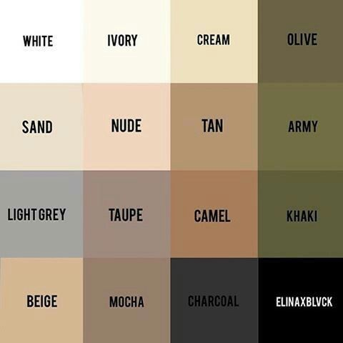
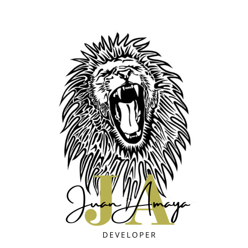
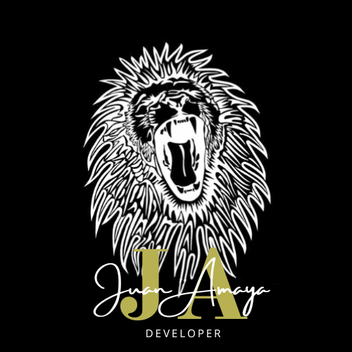

!SON 16 LAS PRENDAS QUE NO PUEDEN FALTARTE! debes tener en cuenta que yo te ayudo brindando bases, tu construyes el resto desde tu estilo personal...dicho esto, personalmente pienso que para iniciar se debe empezar con los colores neutrales, como lo son, el blanco, el negro, el beige...etc, mas adelante dejo la paleta de colores neutrales para iniciar a combinar colores
!DICHO ESTO HABLEMOS DE ROPA! las prendas que deben estar en tu guarda ropas; los Sacos tejidos , nada mejor que algo hecho a mano para sentir que abrazas con el alma. Abrigo tres cuartos , El negro es el básico, el azul el que te pegará con todo y el beige el que todo el mundo se girará para mirarlo (siempre y cuando hayas elegido correctamente la talla, asegúrate de que la costura del hombro cae al final del hueso de tu clavícula). Cazadora vaquera o Chaqueta de Jean , para cuando no quieras arriesgarte, siempre esta la vieja confiable nacida en los 70's. Chamarra de cuero o Chupa de cuero , no siempre se puede ir de jean, entonces, vamos a darle al toque rockero, ¡HELL YEAH! pero no excederse, con el traje ¡NO SE USA! Un par de trajes, uno azul y uno negro, Controla el hombro, el largo de la manga, el ajustado de la chaqueta y, sobre todo, el largo de los bajos del pantalón (que la tela roce el zapato, y no que parezca traje que heredaste de la sucesion de tu abuelo) Obviamente, tambien necesitariamos Camisas para vestir, estaria bien con una blanca, que combina con todo, y una azul que es muy facil de mezclar con mas tonos. NO NOS QUEDEMOS EN LA FORMALIDAD tambien puedes tener unas Camisas casuales, las que no son tan serias pero tampoco tan informales. Camisas Polos, Tres colores, lisos, memorízalos: blanco, azul marino y negro, con esto puedes ir a un asado, a una fiesta o inclusive a un funeral. Camisetas, aunque parezca algo logico, parece que hay personas que nunca se encuentran con ellas en la tienda de ropa, ademas que debes tener en cuenta que antes de adentrarte en el mundo de los estampados, hazte con una tonelada de estas en colores neutros o por lo menos camisetas lisas Bomber algo de ese estilo militar para combinar de manera casual, no podemos negar que el ejercito Estado Unidense aporto una prenda con estilo tanto funcional como llamativo. Jeans o Vaqueros obviamente no puede faltar esta prenda en azul y negro, que funciona para casi todo, para salir a una disco o simplemente a ingerir bebidas alcoholicas en un parque. Pantalones en este caso yo recomiendo El khaki que es el básico del american sporstwear. Uno de los pantalones más versátiles. Puedes añadirle cualquier cosa (camisa, polo, camiseta, jersey, jersey con cualquiera de las opciones anteriores) y siempre quedará bien. Cinturones- El informal: marrón, trenzado, hebilla media - El Formal: negro liso, fino sin llegar a ser demasiado estrecho, hebilla cuidada. Corbatas algo primordial para iniciar es la elección del color puede llegar a ser controvertida. Nuestra recomendación es que, ante la duda, escojas tonos sobrios, apagados. Y si no te acalaras con las sobriedades, grábate estos tres colores en la cabeza: azul marino, granate y verde botella. Si te parece sencillo o deseas agregar un estilo más autentico La clásica de rayas en diagonal popularizada por Brooks Brothers o las de micro-estampados discretos serán las mejores opciones para empezar. ¡NO USEN CORBATAS QUE PARECEN SALIDAS DE UN TALLER DE MANUALIDADES DE INFANTES! Zapatos de vestir Si hay que elegir uno, que sea el Oxford, este modelo en color negro,¡DAMN! es el zapato de vestir supremo, puesto que sirve para traje elegante, o para ocasiones en las que se deba usar Chaqué Zapatillas o Tenis primordial unas blancas, son la salvacion, despues puedes agregar los colores que desees, pero primordial tener unas blancas como as
"Soy un mechudo amante al buen vestir y la moda minimalista, tengo unos crespos a los que cuidar, mi equipo de trabajo es mi madre, quien es diseñadora de modas. Me gusta estudiar que prendas puedo usar para mantener mi toque de autenticidad."
MODA JOYERIA BOUTIQUE ROPA COLECCION Odin TENDENCIAS PRENDAS Regresar ESTILO ETIQUETA Dizfras ELEGANCIA CLASE


Enter your e-mail below and get notified on the latest blog posts.